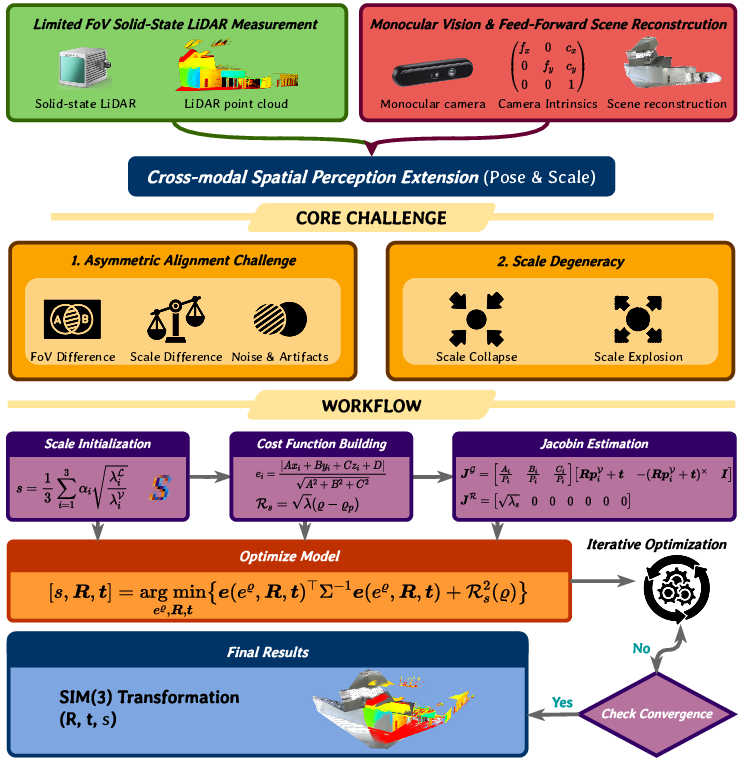

Abstract
Solid-state LiDAR (SSL) is popular in robotics due to low cost and size, but its narrow field of view (FoV) limits perception. Meanwhile, feed‑forward 3D reconstruction from a single image (e.g., VGGT) provides dense spatial priors. We propose V2L-Fusion, a cross‑modal framework that aligns vision‑generated point clouds with narrow‑FoV SSL measurements. The core challenge is asymmetric alignment causing scale degradation. We introduce anisotropy‑weighted scale initialization, exponential scale parameterization, and weight‑adaptive scale regularization to achieve stable metric alignment. Experiments show reliable FoV expansion, effectively turning a monocular camera + narrow LiDAR into a large‑FoV sensing system. Code is publicly available.
Main Contributions
Cross-modal framework
First work using feed‑forward 3D reconstruction to expand SSL FoV. Minimal setup (monocular + narrow LiDAR) achieves large‑FoV perception.
Anisotropy‑weighted scale initialization
Geometry‑aware initialization via robust covariance & eigenvalue weighting, reducing scale ambiguity before alignment.
Robust optimization
Exponential scale parameterization + geometry‑adaptive regularization (λ = κ·exp(-χ)) prevents scale degeneracy.
Extensive evaluation
Self‑collected (YIJIA‑AVIA/MID) & public datasets (JLCC, MLCC). Benchmarked against 13 registration methods + 5 vision models.
Method: V2L‑Fusion
(VGGT / DA3 / π³) Vision point cloud
(scale‑ambiguous) Anisotropic scale init (eq. 7) Exp. scale + adaptive reg.
(λ = κ·exp(-χ)) Metric aligned
expanded FoV
Overview

Figure 2: System overview of V2L-Fusion
Objective
V2L-Fusion addresses the limited field-of-view (FoV) challenge in solid-state LiDAR systems by leveraging monocular vision as a complementary sensing modality. Our framework achieves dense, metric-scale 3D reconstruction through cross-modal sensor fusion, enabling cost-effective large-scale perception for robotics and autonomous systems.
Key Components
Utilizes feed-forward 3D reconstruction models (e.g., VGGT) to generate dense point clouds from single images, providing rich spatial priors for alignment.
Introduces anisotropy-weighted scale initialization and exponential parameterization to resolve scale ambiguity between vision and LiDAR coordinate systems.
Employs geometry-adaptive regularization with weight factor λ = κ·exp(-χ) to prevent scale degeneracy in low-texture or sparse regions.
Processing Pipeline
- Input Acquisition: Synchronized monocular image + narrow-FoV SSL measurements
- Vision Reconstruction: Feed-forward model predicts dense but scale-ambiguous point cloud
- Scale Initialization: Anisotropic covariance analysis provides initial scale estimate
- Cross-modal Registration: Joint optimization of rotation, translation, and scale
- Output: Metric-aligned, expanded FoV point cloud with RGB-D information
The fundamental challenge lies in the asymmetric nature of vision-to-LiDAR alignment: vision provides dense but scale-ambiguous data, while LiDAR offers sparse but metrically accurate measurements. Our solution explicitly models this asymmetry through adaptive regularization and scale parameterization.
交互式点云查看器 (支持PLY/PCD格式)
从pcd子目录加载点云文件，支持超大点云流式加载与LOD渲染。当前文件列表：
当前加载: AVIA-2.ply | 点数: 0 | RGB 可用 | 强度通道 可用
定性视场扩展效果
Experimental highlights
Robustness & convergence (Table 1)
| Scene | ER median (°) | Et median (m) | Es median | SR (%) |
|---|---|---|---|---|
| YIJIA‑AVIA | 0.21 | 0.027 | 0.011 | 96.4 |
| YIJIA‑MID | 0.18 | 0.019 | 0.008 | 98.1 |
| JLCC (avg) | 0.74 | 0.058 | 0.039 | 91.2 |
Comparison with registration methods (Table 2, excerpt)
| Method | YIJIA‑AVIA (ER°/Etm/Es) | YIJIA‑MID | JLCC |
|---|---|---|---|
| GICP | 42.0 / 1.57 / 0.327 | 58.4 / 0.713 / 0.320 | 10.6 / 1.47 / 0.057 |
| TEASER++ | 50.7 / 0.45 / 0.153 | 75.6 / 6.51 / 0.060 | 140.6 / 4.44 / 0.060 |
| MAC | 1.2 / 1.354 / – | 3.8 / 0.643 / – | 9.2 / 1.698 / – |
| Ours | 1.6 / 0.315 / 0.021 | 1.9 / 0.128 / 0.0097 | 7.6 / 1.395 / 0.049 |
Key formulation: asymmetric alignment
The residual for point ρᵢ is point‑to‑plane with binary inlier weight ρ (eq. 10). Optimization variable is δΘ ∈ sim(3). Exponential parameterization s = exp(ρ) guarantees positivity. The adaptive regularizer ℛ_s = √λ (ρ − ρₚ) with λ = κ·exp(-χ) (χ = coefficient of variation) stiffens constraints in low‑structure areas. Jacobians are derived for efficient Gauss‑Newton.
Datasets & platform
- YIJIA‑AVIA / MID – Gemini 336L + Livox AVIA / MID‑40, 10 scenes
- JLCC – artificially split into low‑overlap quarters
- MLCC‑AVIA / MID – 5 scenes each
- Hardware – i9‑14900KF, RTX 4090, 24GB
Conclusion & reproducibility
We presented V2L-Fusion – a scale‑aware fusion framework that aligns monocular depth predictions with narrow‑FoV solid‑state LiDAR. Our anisotropy‑weighted initialization, exponential parameterization, and adaptive regularization solve the asymmetric alignment problem. Extensive experiments prove robustness and accuracy, enabling low‑cost FoV expansion. Code, datasets, and pre‑trained weights are publicly available on GitHub.
@misc{v2lfusion2026,
title={V2L-Fusion: Scale-Aware Vision-to-LiDAR Fusion for Field-of-View Expansion},
author={Anonymous},
booktitle={ACM MM},
year={2026}}